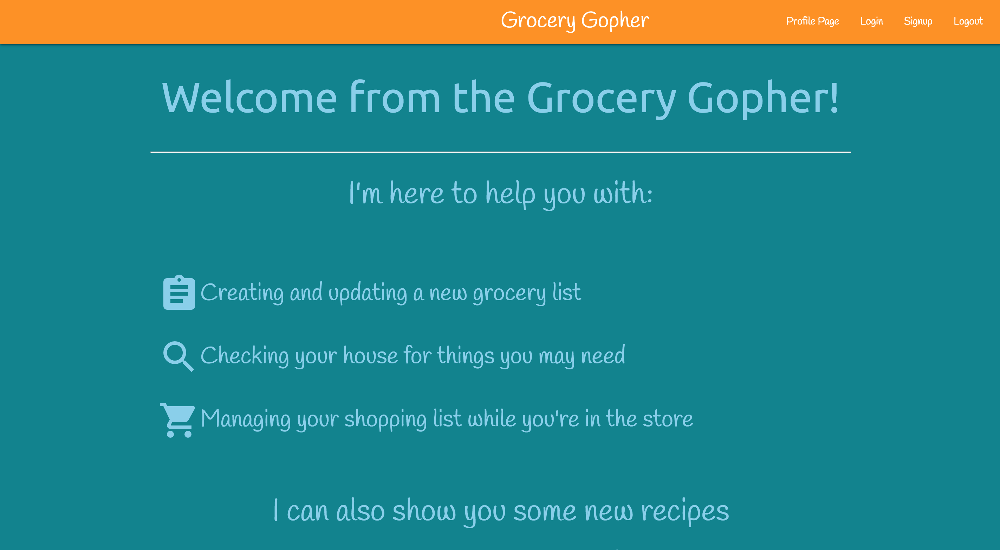
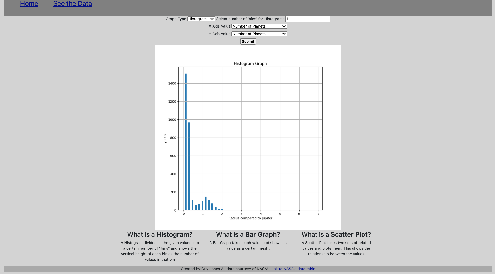

Projects
Grocery Gopher
Express App
This is an express app for saving, editing, and using a grocery list while shopping. It is styled with a mobile-first mindset. Not only does the app maintain a current list for the user, it also has an algorithm to create a list of all items purchased two or more times in the last 30 days.


Live Link Click here!
Github Link Click here!
Exoplanet Seeker
Flask App
This app collects a subset of data available from NASA's Confirmed Exoplanet database. The app first presents the data to the user in a table format so that the user can see all of it. When the user is ready, they click on the 'Go Graph the Data' link and are taken to a page where they can select different values to graph, and what format of graph they would like to use.

Live Link Click here!
Github Link Click here!
Mushroom Hunter

To begin play simply click on the button labeled ‘click here to get your flashlight and enter the mine’. Search for the mushroom, and click on it to get one point and end the level. Click on the button labeled ‘click here to continue’ to go to the next level. Starting at the second level a rat is randomly placed in the game area. Each level after that one more rat is added. There’s a pause designed into the game when you scroll over the rats. As you progress in levels the pause decreases until it’s roughly 1/5 of a second. If you let your ‘flashlight’ linger too long on the rats they’ll attack you and you'll lose a health point.
Github Link Click here!